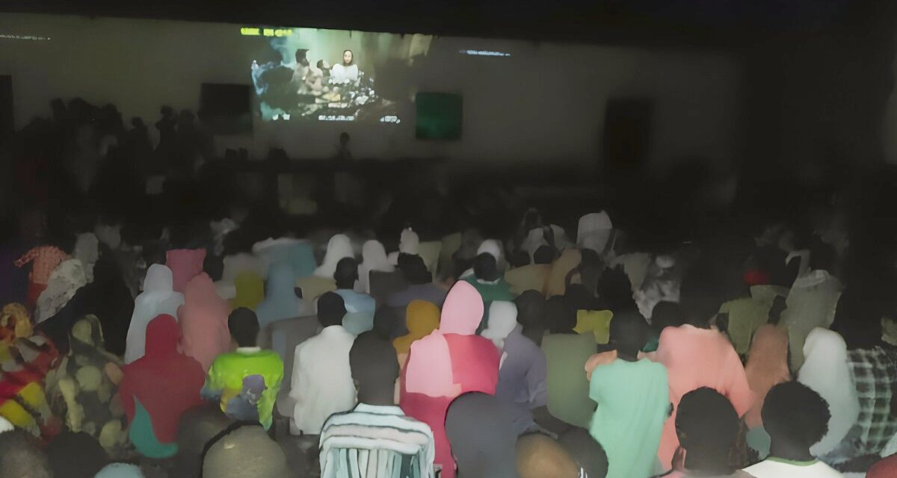

The Jesus Film ran for two nights. Around 700 came the first evening and watched in Arabic. Forty-five made decisions for Christ. Another 23 connected through the Litestream, a portable WiFi hotspot that shares Scripture, audio Bibles, and training material straight to phones. No internet required.
Night two nearly doubled the turnout. About 1,300 gathered, this time in another town. The sound system buckled under the crowd, but more than 50 made decisions for Christ. Eighteen more connected through the portable WiFi device.
"People opened their phones and found Scripture, videos, and all sorts of discipleship materials in their local heart language, ready to download. No data plan needed. For many, it was the first time holding the Gospel in their hands."
In a separate screening at another location, 105 people attended a one-day showing. Twenty connected through the Litestream for follow-up discipleship and Bible resources. The team continues to pray for the Word to take root in their hearts.
By the numbers
- About 2,100 total attendance across three days
- 95+ decisions for Christ
- 61 connected via WiFi for discipleship follow-up
- 3 languages: Arabic and 2 other local dialects
Thanks to all the Empower Dreams prayer partners and donors who helped make this possible. The Jesus Film projectors, large-capacity speakers, and Litestream WiFi devices were the key ministry tools for these incredibly fruitful gatherings. Despite all the danger and challenges, the work in Sudan continues to flourish, with people making decisions to follow Jesus.
This month Empower Dreams marks 15 years of ministry, and fruit like this is exactly what your prayers and gifts have made possible over those years.
How you can pray
- For the 95+ who stepped forward, that their faith takes root
- For the 61 WiFi connections to become real discipleship
- For open hearts among those who attended
- For sound equipment that can match the size of these crowds
- For provision and protection for the ministry teams on the ground
If the Lord leads you to do more than pray, Give Monthly to put more of these tools in the hands of our partners.
Empower Dreams pays no salaries and covers its own operating expenses, so every dollar donated fuels mission impact through our partners.